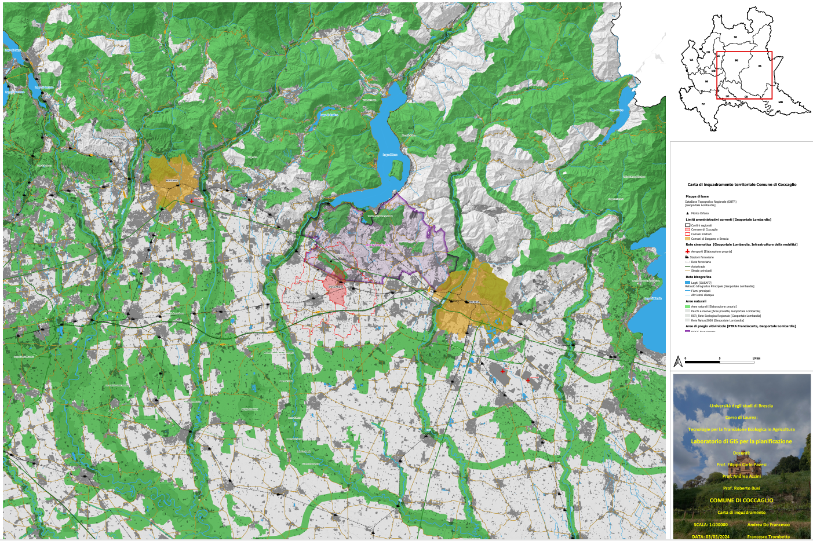
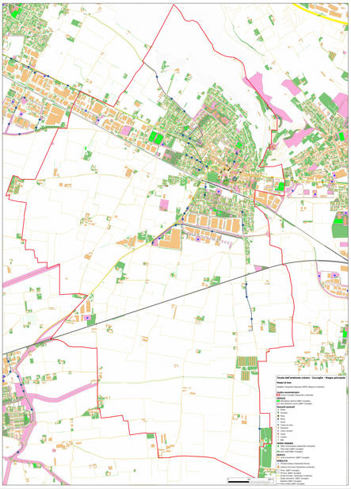
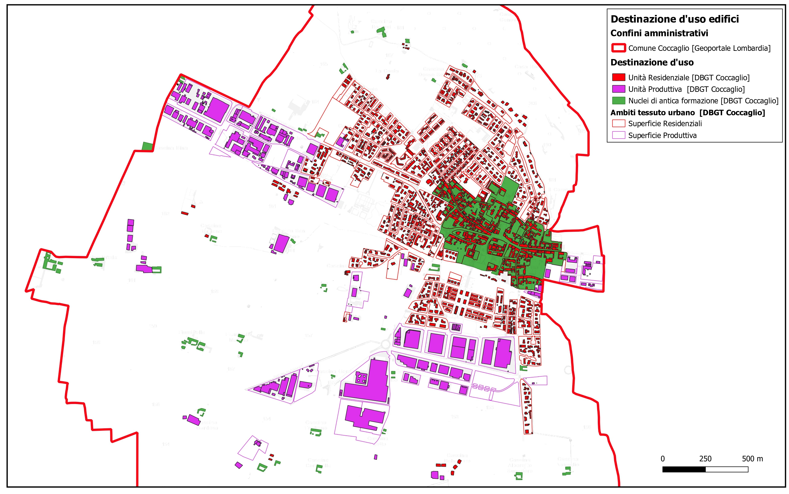
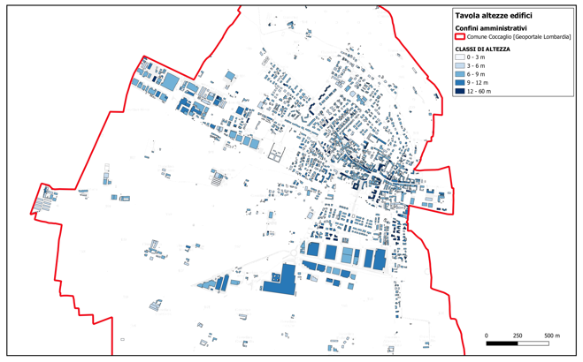
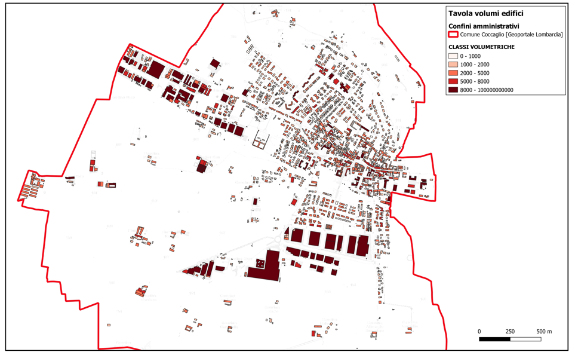
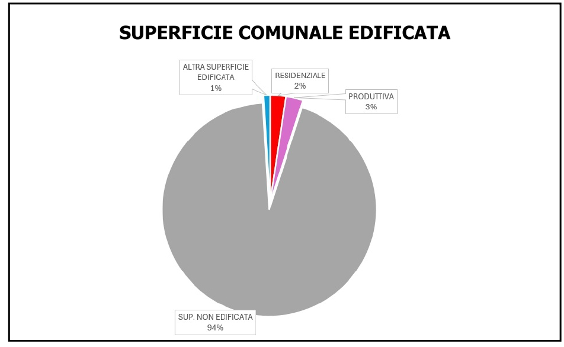
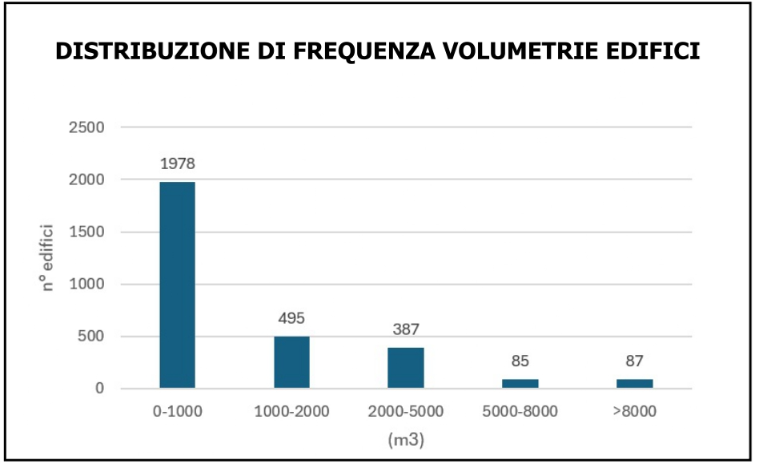
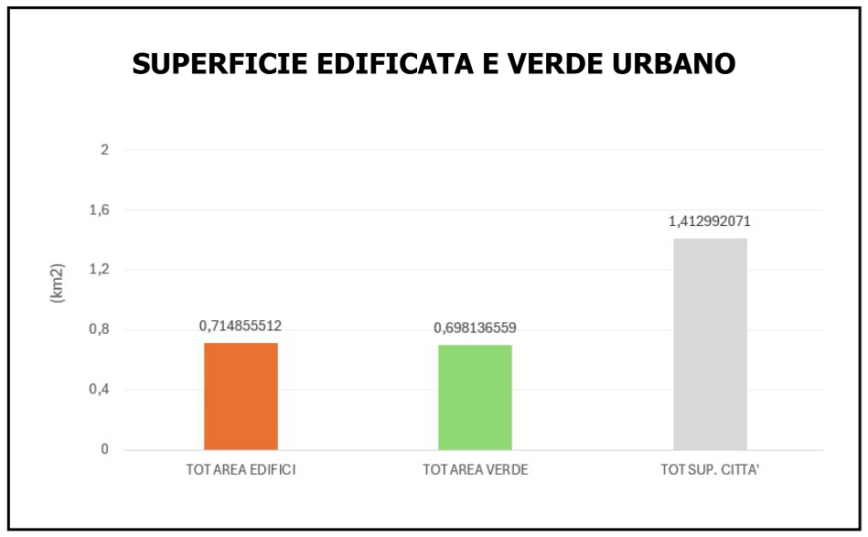
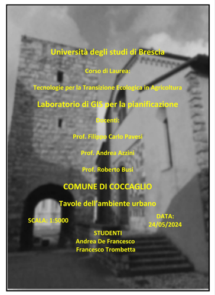
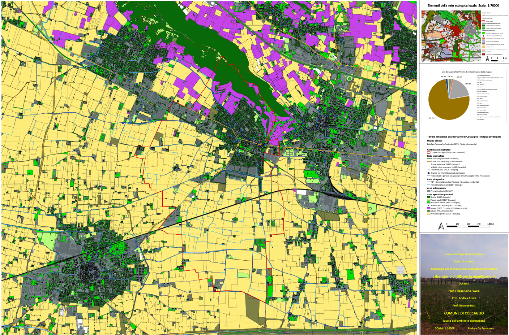

Laboratorio di GIS per la pianificazione — Università degli Studi di Brescia, 2024
Progetto cartografico sviluppato nell'ambito del Laboratorio di GIS per la pianificazione. L'obiettivo era produrre un'analisi GIS completa del territorio del Comune di Coccaglio (BS), articolata su tre tavole a scale diverse, integrando dati da fonti istituzionali multiple: DataBase Topografico Regionale (DBTR), DataBase GeoTopografico comunale (DBGT), Geoportale Regione Lombardia e DUSAF7. Sistema di riferimento: EPSG:32632 (WGS 84, UTM 32N).
Inquadramento del Comune di Coccaglio nel contesto regionale lombardo: rete cinematica (autostrade A4 e A35, SS11, ferrovia), rete idrografica, aree naturali protette (Rete Natura 2000, RER, aree protette) e perimetro della DOCG Franciacorta. I comuni limitrofi sono stati identificati tramite la funzione overlay_touches().

Analisi dettagliata del territorio comunale: distribuzione dei servizi, rete di mobilità intra-comunale (piste ciclabili e viabilità intrapoderale), verde urbano. Mappe accessorie su destinazione d'uso degli edifici, altezze per classi di 3 m e volumetrie per cinque classi. Tre grafici quantitativi mostrano la composizione delle superfici edificate, la distribuzione delle volumetrie e il rapporto tra superficie edificata e verde urbano.








Analisi del territorio extracomunale con focus sull'uso del suolo agricolo: pianura maidicola, vigneti e oliveti della DOCG Franciacorta, aree boscate del Monte Orfano. La mappa accessoria (scala 1:70.000) approfondisce la rete ecologica locale, individuando varchi, corridoi e zone di riqualificazione.
